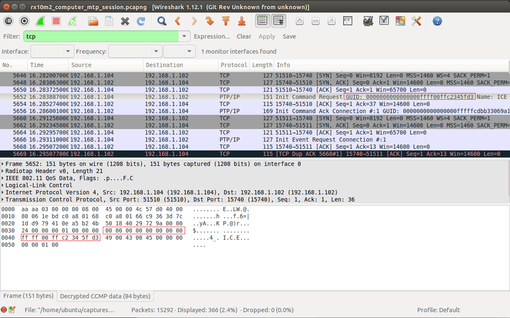
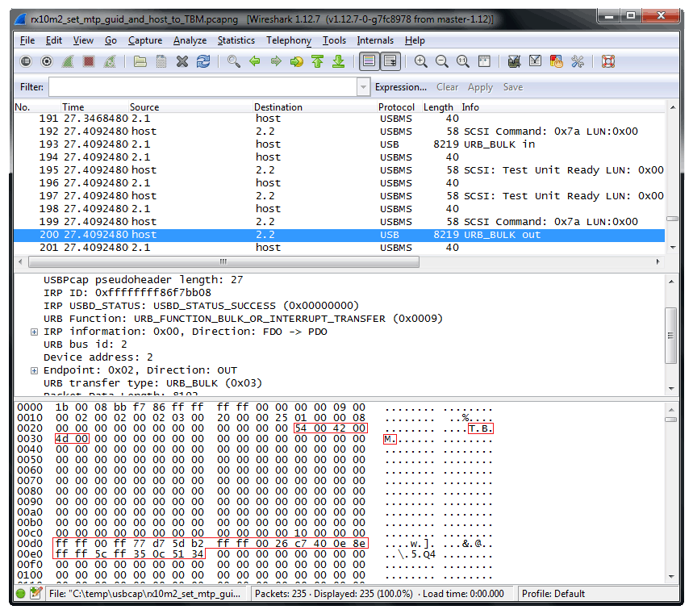

Airnef Developer Notes |
This page contains engineering-level notes for the ongoing development of Airnef.
09/17/15- I started working on Sony support last night. The first thing I found is that you have to use "Send to Computer" instead of "Send to Smartphone". The latter uses an SSDP/XML mechanism to transfer photos instead of MTP. Once I used the correct camera mechanism I was able to get my Sony camera to accept an MTP connection but it rejects my Init-Command request, which is the MTP primitive where a host identifies itself by name and GUID and gets a session key from the camera in return. This logic is in Airnef's mtpwifi.py::sendHostIntroduction(). For anyone who has used Sony's desktop wirelsss support before - they require you to do a one-time configuration where you connect the camera to your computer via USB and run their 'PlayMemories Home' application to authorize your sysetm. Only one system is allowed to be authorized at a time. Once authorized the camera will mount as a filesystem (or at least a shell extension) and let you drag/copy files from the camera. Unfortunately the mechanism is very slow plus I get recurring errors when even just trying to list a camera folder directory - I have to continually dismiss the error and refresh the Windows Explorer window before I finally get a complete listing.
So it quickly became apparent that the PlayMemories Home app is configuring the camera to only accept a particular GUID and/or host name for MTP sessions, the one associated with the computer it authorized. The first step to reverse-engineer this mechanism is to find out what GUID/host name the camera was configured by PlayMemories Home to accept. I did this by capturing the start of an MTP session with Wireshark:

'ICE' is the name of my desktop so that makes sense. I modified Airnef to send "ICE" instead of 'Airnef' as the host identiifer but the camera still rejected the session. I then modified Airnef to send the PlayMemories-configured GUID and...success! For differential testing I then changed the host identifier back to 'Airnef' and the camera still accepted the session, so it's clear the camera is only validating the GUID. The next task then is to figure out how Play Memories is generating the GUID and see whether it's accessible anywhere on the computer that Airnef can automatically cull to make this work for users who don't want to have to run Wireshark :) For this I went searching in the registry via regedit. Regedit doesn't let you do searches of binary key data so I had to first export the registry to a text file to make it searchable...it exported to a 1GB text file! I couldn't find the full GUID in the registry but I found a large segment of it:
Key Name: HKEY_LOCAL_MACHINE\SOFTWARE\Microsoft\Windows\CurrentVersion\WindowsUpdate Class Name: <NO CLASS> Last Write Time: 9/15/2015 - 7:01 AM Value 0 Name: SusClientId Type: REG_SZ Data: 1b101e35-7012-47c2-80d6-b8996bf77d59
Value 1 Name: SusClientIdValidation Type: REG_BINARY Data: 00000000 06 02 28 05 2c 2c 53 00 - 32 00 31 00 48 00 4e 00 ..(.,,S.2.1.H.N. 00000010 53 00 41 00 46 00 43 00 - 30 00 38 00 34 00 30 00 S.A.F.C.0.8.4.0. 00000020 33 00 4e 00 20 00 20 00 - 20 00 20 00 20 00 06 00 3.N. . . . . ... 00000030 ff c2 34 5f d3 06 90 2b - 34 5a b5 76 06 90 2b 34 ÿÂ4_Ó..+4Zµv..+4 00000040 5a b5 86 06 00 50 56 c0 - 00 01 06 00 50 56 c0 00 Zµ...PVÀ....PVÀ. 00000050 08 54 00 6f 00 20 00 62 - 00 65 00 20 00 66 00 69 .T.o. .b.e. .f.i 00000060 00 6c 00 6c 00 65 00 64 - 00 20 00 62 00 79 00 20 .l.l.e.d. .b.y. 00000070 00 4f 00 2e 00 45 00 2e - 00 4d 00 2e 00 54 00 6f .O...E...M...T.o 00000080 00 20 00 42 00 65 00 20 - 00 46 00 69 00 6c 00 6c . .B.e. .F.i.l.l 00000090 00 65 00 64 00 20 00 42 - 00 79 00 20 00 4f 00 2e .e.d. .B.y. .O.. 000000a0 00 45 00 2e 00 4d 00 2e - 00 .E...M...
The full PlayMemories GUID is 00.00.00.00.00.00.00.00 - FF.FF.00.FF.C2.34.5F.D3. The data in this registry key contains the (00).FF.C2.34.5F.D3 beginning at offset 0x2F. That's a start. The next step is to figure out whether the remainder of the GUID is fixed (hopefully) or if it's based on some other system-specific GUID/data. And also to figure out how this is generated under OSX as well. To be continued...
09/19/15 - Worked on this some more today. I searched further into the registry and found that the Sony partial GUID value (00.FF.C2.34.5F.D3) in the HKEY_LOCAL_MACHINE\SYSTEM\CurrentControlSet\Control\Nsi\ hive for one of my network adapters - the TAP-Win32 Adapter V9. This is a bridge driver that is used for VPNs and the 6-byte partial GUID is the virtualized MAC address of the TAP driver. It didn't make sense that Sony would use the TAP driver's MAC as the authenticated MAC address but I figured Sony was maybe using the first MAC address it found in the system. Looking through the Win32 API I found the function that Sony is likely using to get the MAC - GetAdaptersInfo(), which returns an array of structures detailing every network interface in the system. I wrote a quick program to call it myself and sure enough the first adapter in the list was the TAP driver. To check if Sony was only authenticating the first MAC address it found I captured the USB traffic to my RX10M2 while setting my system as the authenticated host in PlayMemories Home for wireless transfers using USBPCap decoded through WireShark, then searched for the packet containing my machine host name (in this case, "TBM"):

So it's a SCSI CDB OP of 0x7a, Bulk-Out transfer with a payload of 8192 bytes. The utf-16 machine name starts at offset 0x2C. Looking further into the data I see all my MAC addresses being passed to the camera (starting at offset 0xd0), instead of just the first TAP driver's MAC. This implied that the camera will allow any of the MAC addresses. I then had Airnef test each of these MAC addresses as the GUID and the camera accepted a connection for all of them. Good stuff. This means generating the GUID is a simple matter of obtaining any of the 6-byte MAC addresses on the system and prepending two 0xFF bytes. This was under Windows. I then tried it on OSX - instead of Play Memories to set the authenticated system on OSX, Sony provides a utility called Wireless Auto Import. I installed then and set my OSX box as the authenticated system. Unlike on Windows where the camera shows up as a device/shell extension, on OSX the app simply automatically downloads every file whenever the camera's network becomes available - not very user friendly. Anyway, I got a list of MAC address of my OSX box via ifconfig to see if the OSX version passes them all the camera like the PlayMemories for Windows does - turns out it doesn't. It only passes the wireless MAC address, probably under the assumption that a Mac box is less likely to have multiple WiFi adapters than a Windows box. This isn't a big deal except that the simple mechanism to obtain the MAC address via Python will require a little more complexity under OSX to find the MAC of a specific adapter (wireless).
Knowing how to generate the GUID Sony expects means Airnef will be able to automate the connection to Sony cameras just like Canon/Nikon (who don't authenticate GUIDs). The user will just have to perform a one-time configure with PlayMemories Home over USB, the same as they have to know using Sony's WiFi transfer mechanism. Unfortunately Sony doesn't provide an app for Linux so Linux users would have to connect the same machine under Windows/OSX to do the one-time authentication. Another option for all OS's would be for me to write a utility app that sends the same SCSI Command to the camera myself, where I could configure a hard-coded GUID like the one I use for Canon/Nikon. This would be the best solution although I'm not sure I want to go mucking with persistent data on the camera.
Besides the GUID for Sony I'll also probably implement SSDP to discover the IP address of the camera, so that the user doesn't have to use a static IP address when configuring the camera's infrastructure mode.
With the GUID stuff resolved I then went on to test the basic Airnef functions with Sony. There were a few small changes required - Sony was rejecting my MTP_OP_GetNumObjects() with an MTP_RESP_InvalidObjectFormatCode. After some debugging found out Sony doesn't support not specifying the two optional parameters, so the fix was simply to include those with the command. Another small issue was that Sony isn't including a capture date string for non-file objects and that the format of the capture date when included is not the standard one used by Canon/Nikon. That fix will be easy as well. Past those two issues everything worked great....except when I tried to perform another session. The camera hangs on the MTP_TCPIP_REQ_HOST_INTRODUCTION. Looks like Sony's firmware only expects a single persistent MTP session per user-initiated "Send to Computer" action. This is unfortunate because it'll require the user to redo the "Send to Computer" each time he wants to perform a new action from Airnef. The alternative would be to keep the MTP session open but that wont work with the current Airnef/Airnefcmd architecture since the session handle goes away after Airnefcmd exits. I plan to do some more troubleshooting to see if there's a way to get the camera to allow multiple MTP sessions per "Send to Computer".
09/24/15 - Here is the proposed file renaming engine for the upcoming v1.1 release of Airnef:
--filenamespec spec and --dirnamespec spec
Rename downloaded files using Airnef's renaming engine. This can be applied to the filename and/or the directory (tree) where the file is stored. 'spec' contains your desired output name including optional specifiers, which offer the ability to insert dynamic data into the filename, such as the camera model, serial nubmer, capture date, etc.. Each specifier is enclosed in @@ and can optionally include subscripts to only use a portion of the dynamic data. Here is the full list of support specifiers:
| Specifier | Description | Example |
| Capture Date/Time Specifiers | ||
| @capturedate@ | Capture date of file in yyyymmdd format | 20150924 |
| @capturedate_m@ | Capture date of file (month) in mm format | 09 |
| @capturedate_d@ | Capture date of file (day) in dd format | 24 |
| @capturedate_y@ | Capture date of file (year) in yyyy format | 2015 |
| @capturedate_dow@ | Capture date of file (day of week, numeric) [Monday=1, Tuesday=2...Sunday=7] | 4 |
| @capturedate_woy@ | Capture date of file (week of year) . Monday considered first day of week | 38 |
| @capturedate_M@ | Capture date of file (month, text) | September |
| @capturedate_DOW@ | Capture date of file (day of week, text) | Thursday |
| @capturedate_S@ | Capture season (Spring, Summer, Fall, or Winter) | Fall |
| @capturetime@ | Capture time of file in hhmmss format | 140513 |
| @capturetime_h@ | Capture time (hour) of file in hh format | 14 |
| @capturetime_m@ | Capture time (minute) of file in mm format | 05 |
| @capturetime_s@ | Capture time (seconds) of file in ss format | 13 |
| Download Date/Time Specifiers. The airnefcmd launch date/time is used as the download date/time for all files downloaded in the session | ||
| @dldate@ | Download date of file in yyyymmdd format | 20150924 |
| @dldate_m@ | Download date of file (month) in mm format | 09 |
| @dldate_d@ | Download date of file (day) in dd format | 24 |
| @dldate_y@ | Download date of file (year) in yyyy format | 2015 |
| @dldate_dow@ | Download date of file (day of week, numeric) [Monday=1, Tuesday=2...Sunday=7] | 4 |
| @dldate_woy@ | Download date of file (week of year) . Monday considered first day of week | 38 |
| @dldate_M@ | Download date of file (month, text) | September |
| @dldate_DOW@ | Download date of file (day of week, text) | Thursday |
| @dldate_S@ | Download season (Spring, Summer, Fall, or Winter) | Fall |
| @dltime@ | Download time of file in hhmmss format | 140513 |
| @dltime_h@ | Download time (hour) of file in hh format | 14 |
| @dltime_m@ | Download time (minute) of file in mm format | 05 |
| @dltime_s@ | Download time (seconds) of file in ss format | 13 |
| Capture Filename/Folder/Media Card Specifiers | ||
| @filename@ | Capture filename (full) | DSC_0014.NEF |
| @filename_root@ | Capture filename (root, without extension) | DSC_0014 |
| @filename_ext@ | Capture filename (extension) | NEF |
| @camerafolder@ | Camera folder of filename | 100D7200 |
| @slotnumber@ | Media card slot # file downloaded from (1 or 2) | 1 |
| Camera Make/Model/Serial Specifiers | ||
| @cameramake@ | Camera Make | Nikon |
| @cameramodel@ | Camera Model | D7200 |
| @cameraserial@ | Camera Serial Number | 35551323 |
| Download File Number Specifiers | ||
| @dlnum@ | The nth file downloaded this Airnef session (1..number of files downloaded) | 0045 |
| @dlnum_lifetime@ | The nth file downloaded for this camera model+serial for lifetime of Airnef | 5345 |
| Meta Specifiers | ||
| @replace~xxx~yyy@ | Replace every occurence of 'xxx' with 'yyy' for output string generated up to this point | @replace~NEF~Raws@ converts "NEF" to "Raws" |
| @replacere~xxx~yyy@ | Regular Express version of @replace. This uses the Python re.sub() function. Python regex reference here. | |
| @@ | Literal '@' | @ |
All of the above specifiers except @replace@ can include optional subscripts to select a subset of characters from the generated specifier string. The first subscript is the starting character position. The second subscript is the ending character position (exclusive). An empty first subscript implies from the beginning of the string. An empty second subscript implies to the end of the string. Subscript values can be negative, which count from the end of the string.
Here are some examples based on a sample filename of DSC_0014.NEF:
| Example | What it Does | Output |
| @filename:4:8@ | Extract characters 4 through 7 | 0014 |
| @filename::3@ | Extract characters from beginning through 2 | DSC |
| @filename:4:@ | Extract characters 4 through end | 0014.NEF |
| @filename:-3:@ | Extract last three characters | NEF |
| @filename:-3:-2@ | Extract one character starting 3 from the end | N |
The @replace@ specifier is very powerful and allows you to perform search/replacement operations. It is performed on the generated output string at the point where the @replace@ occurs. This means it is performed after any other specifier replacements up to that point. Here are examples:
| Example | Sample Input | Output |
--filenamespec @cameraserial@@replace~35551323~Main Camera@_@dlnum@@filename_ext@ |
Serial #35551323, Filename DSC_0014.NEF | "Main Camera_0001.NEF" |
--dirnamespec @cameramodel@\@filename_ext@@replace~NEF~Raw Files@ |
D7200 and DSC_0014.NEF | "D7200\Raw Files" (output directory) |
The directory name generated by --dirnamespec is relative to --outputdir and can can include multiple directories - airnefcmd will recurse to generate the necessary tree of subdirectories for any directory that doesn't already exist within the path. For example, --outputdir c:\mypics --dirnamespec "@cameramodel@\@cameramake@\@cameraserial@" will create (if necessary) the directories c:\mypics\Nikon, c:\mypics\Nikon\D7200, and c:\mypics\Nikon\D7200\35551323
09/27/15 - I'm about feature complete on v1.1. Had a marathon reverse-engineering session last night with my Sony cameras. First I found a workaround for having to match the MAC address of the system authenticated by PlayMemories Home / OSX Wireless Auto Import. Through some trial and error I figured out that the camera will accept any GUID as long as the last 6 bytes are zero - those correspond to what would usually be the authenticated MAC address. This greatly simplified Sony support because having to detect the MAC address on each platform would have been messy.
The larger issue for Sony support has been the apparent inability to accept repeat sessions for a single 'Send to Computer' invocation. That wouldn't be so bad if it weren't for the fact that after an airnef session is done the camera remains in the ready-to-connect screen for 'Send to Computer' - the camera will accept another socket connection but will not respond to any MTP communication. This requires the user to know to cancel out of the 'Send to Computer' after each airnef session and then go back in. Not great for usability. I knew from using the Microsoft PTP-IP driver on Windows that the camera can at least be shoved out of the 'Send to Computer' screen so that it at least becomes obvious that a new 'Send to Computer' action is required for the next session. I captured the wireless interaction between the camera and the PTP-IP driver with Wireshark but the volume of PTP-IP frames made it very hard to isolate the undocumented commands associated with the 'Send to Computer' pushout. I decided to give Sony's Wireless Auto Import a try - that works much better than the PTP-IP driver. Rather than mounting a shell extension that lets you drag files like on Windows, the OSX app simply auto-imports everything on the camera whenever the app sees the camera's SSDP broadcasts. What's even better is that when the app is done it puts the camera in sleep mode! That would certainly solve the issue of the user having to know to exit the 'Send to Computer' mode after an airnef session. I captured the OSX interaction with Wireshark and luckily the volume of traffic was much lower. I was able to isolate not just the specific proprietary PTP command that causes the camera to sleep but also the commands that can change the text of the 'Send to Computer' display to "Sending..." instead of just an unhelpful "Connecting". Rather than posting the technical details here of these commands you can see them in the v1.1 source when its released within the next week or two.
Switching back to Nikon I discovered a strange bug in the D7200/D750 firmware the causes the camera to misreport the seconds field of the capture time for the MTP_GetObjectInfo request. It's reporting a seconds field that is exactly have the actual seconds time of the capture. For example if I view the image in the camera and timestamp is 15:05:40, the capture+modified timestamp from MTP_GetObjectInfo is 15:05:20. No matter what the actual seconds timestamp field is, the camera is returning half that for the MTP_GetObjectInfo. I don't see the bug on my J4 or my D7100 w/WU-1a. This bug is significant for me because the real-time capture logic in v1.1 relies on accurate timestamps of MTP objects to distinguish between photos shot during the real-time session vs preexisting photos on the camera (so much so that I added logic to automatically sync the camera's clock to the system's clock) - at init I use the airnefcmd's launch time as an internal capture filter to know which photos were shot in real-time. Fortunately the workaround is easy - I create some cushion for launch-time so that it can accommodate the 30-second max skew created by the Nikon bug. The only downside is airnefcmd might interpret any photo shot within 30 seconds of launching it in real-time only mode as a real-time photo - but that's unlikely to happen and the worst outcome is transferring an extra image or two.